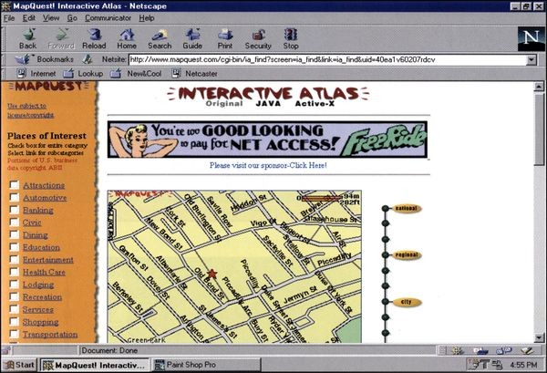
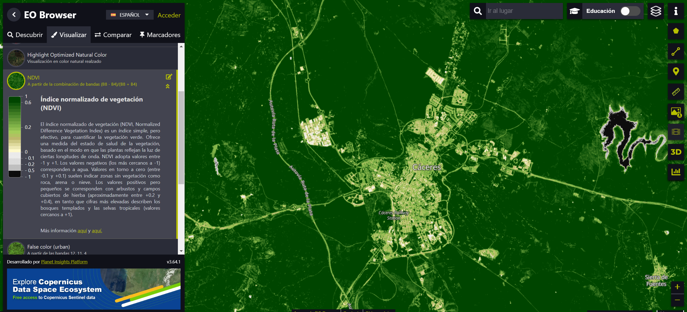
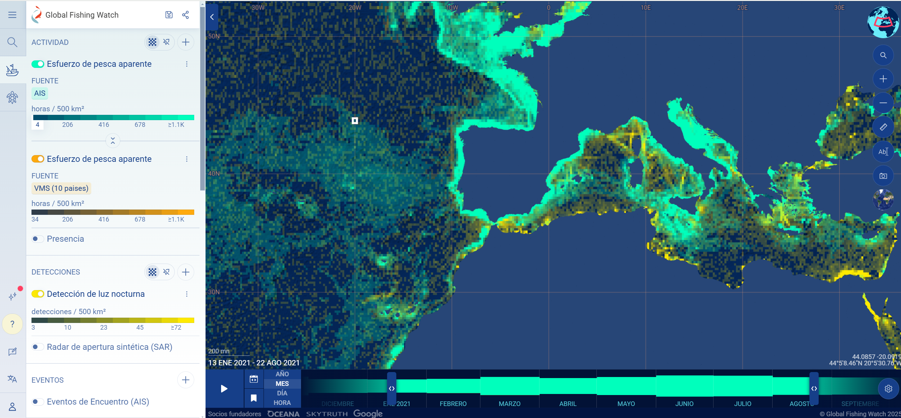

Digitalización de la Cartografía (Décadas de 1960-1980)
La digitalización de mapas comenzó con la creación de sistemas de información geográfica (SIG), como el Sistema de Información Geográfica de Canadá (CGIS) en los años 60. Estos sistemas permitieron almacenar y procesar información geográfica en formato digital, aunque su uso estaba limitado a instituciones científicas y gubernamentales debido a la complejidad técnica y el alto costo.
Ordenadores de gran tamaño y escáneres rudimentarios se utilizaban para convertir mapas en datos digitales. Sin embargo, estos sistemas no eran accesibles para el público general.
Expansión de los SIG y los Primeros Mapas Interactivos (Décadas de 1980-1990)
En los años 80, los avances en hardware y software facilitaron la creación de SIG más accesibles, como ArcInfo, que ofrecía herramientas para analizar y visualizar datos espaciales.
Comienzan a desarrollarse aplicaciones en interfaces gráficas que permiten interacciones simples, como hacer zoom o superponer capas. Sin embargo, estos sistemas aún estaban limitados a computadoras específicas, generalmente en instituciones académicas o gubernamentales.
Revolución de Internet y los Primeros Visores en Línea (1990-2000)
Con la llegada de la World Wide Web (www), los mapas digitales comenzaron a ser accesibles a través de navegadores. Esto marcó un hito en la cartografía digital, ya que los usuarios podían acceder a mapas desde cualquier dispositivo conectado a internet.
- Visores como el de MapQuest (1996) y el servicio TerraServer de Microsoft (1997) ofrecieron mapas interactivos en línea.
- NASA World Wind (2004): Aunque es un programa descargable, fue precursor en la visualización de datos satelitales y geográficos de manera interactiva.
Google Maps y la Popularización de los Visores (2005-2010)
El lanzamiento de Google Maps marcó un punto de inflexión al proporcionar un visor cartográfico rápido, interactivo y accesible al público general.
- Funciones clave: Zoom fluido, búsqueda de direcciones y rutas, integración con imágenes satelitales (añadidas en 2006).
- Street View (2007): Revolucionó la cartografía al introducir vistas a nivel de calle.
Integración con Teledetección y el Big Data (2010-2020)
Se incorporan datos de teledetección provenientes de satélites y drones en visores cartográficos. Mejora en la resolución y velocidad de acceso a datos, permitiendo la visualización en 3D.
Ejemplos como el Google Earth Engine (2010) o el EO Browser.
Era de la Inteligencia Artificial (IA) y el Tiempo Real (2020 en adelante)
Los visores cartográficos actuales integran análisis de IA para identificar patrones, predecir fenómenos y generar mapas automáticamente.
Por ejemplo en google maps, la integración de datos de tráfico, o el visor Global Fishing Watch, que usa IA para analizar los movimientos de embarcaciones en el océano y detectar actividades de pesca ilegal.

Fuente:https://www.computerhistory.org/revolution/theweb/20/392/2345


